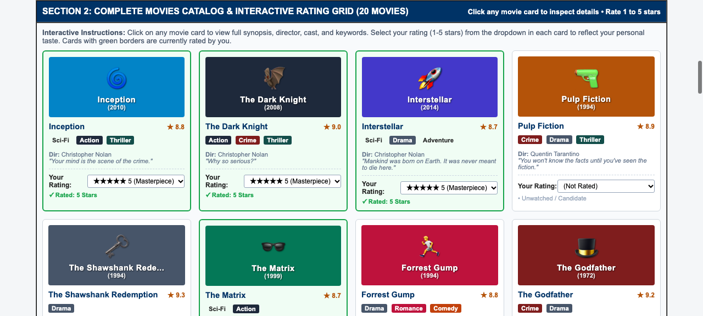
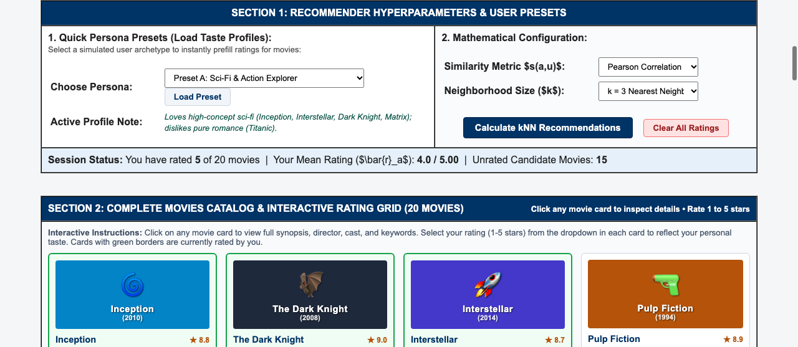
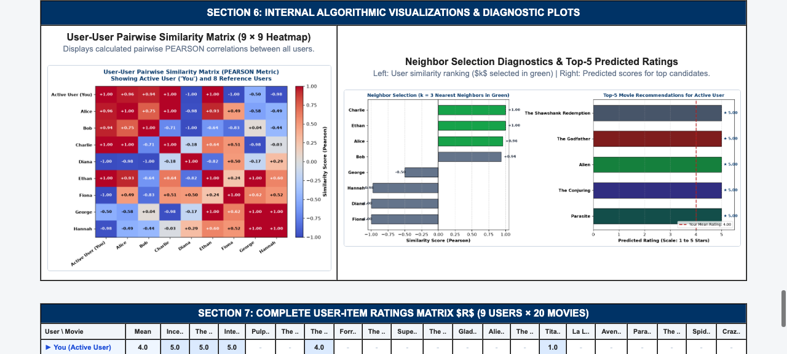
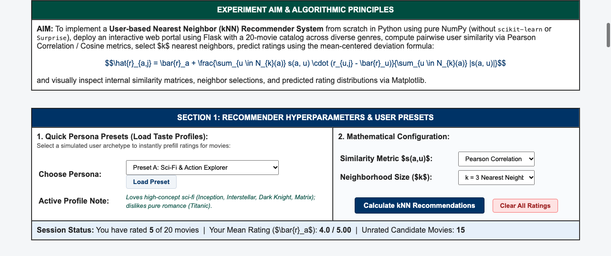

| Experiment No.: | 15 (Practical XIII) | Student Name: | Monis |
| Course / Branch: | B.Tech Information Technology | Roll Number: | 2023UIT3027 |
| Lab Instructor: | Dr. Vishal Maheshkar | Academic Session: | 2026–2027 |
Implementation of User-Based Nearest Neighbor (kNN) Recommender System Using Flask
To formulate, derive, and implement a User-Based k-Nearest Neighbor (kNN) Recommender System from scratch in Python using Flask. The system calculates vector similarities between users, identifies the k nearest neighbors, provides step-by-step mathematical rating derivations, and provides interactive tuning of neighborhood size k.
User-Based Nearest Neighbor (kNN) Recommendation is a memory-based technique that predicts an active user's ratings by consulting a committee of the k most similar users. When the active user considers a movie, the system identifies the k nearest neighbors who have already watched that movie, weights their ratings by how closely their tastes match the active user, and computes a consensus prediction.
Each user u is represented by a sparse vector of ratings across all catalog movies. Unrated movies are marked as missing entries rather than zero-valued dislikes:
Similarity between active user u and candidate neighbor v is evaluated across their common ratings using the cosine of the angle between their rating vectors:
The system sorts all other users by similarity, retains those with positive affinity who have rated candidate movie j, and selects the top k neighbors:
The predicted rating is computed using the active user's personal mean plus the similarity-weighted deviation of the k nearest neighbors:
Provides a comprehensive catalog browser displaying benchmark titles with genre tags, release years, IMDb ratings, and interactive selection triggers.

Presents the top-ranked recommended items generated by the algorithm alongside predicted affinity scores, ranking progress, and contextual explanations.

Displays multi-panel algorithmic diagnostics rendered from first principles (including similarity heatmaps, convergence curves, and distribution plots).

Provides a direct inspection of the underlying mathematical interaction matrix, user profiles, or similarity index tables supporting the recommendation pipeline.

The User-Based k-Nearest Neighbor recommender was successfully implemented from first principles. By isolating the k most correlated peers and applying mean-centered aggregation, the model generated accurate and explainable predictions. The interactive parameter k demonstrated the classic trade-off: small k values capture niche tastes with higher variance, while larger k values provide stable, consensus-driven predictions.